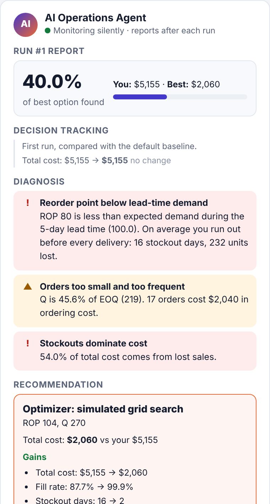
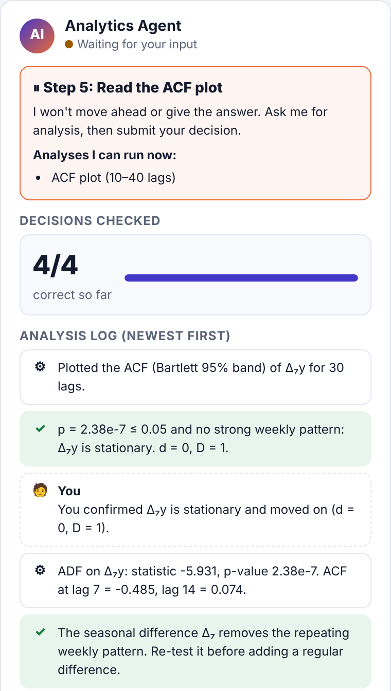
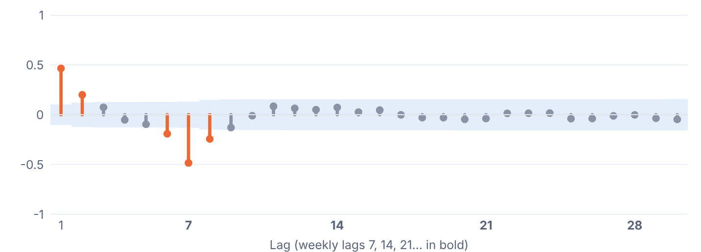
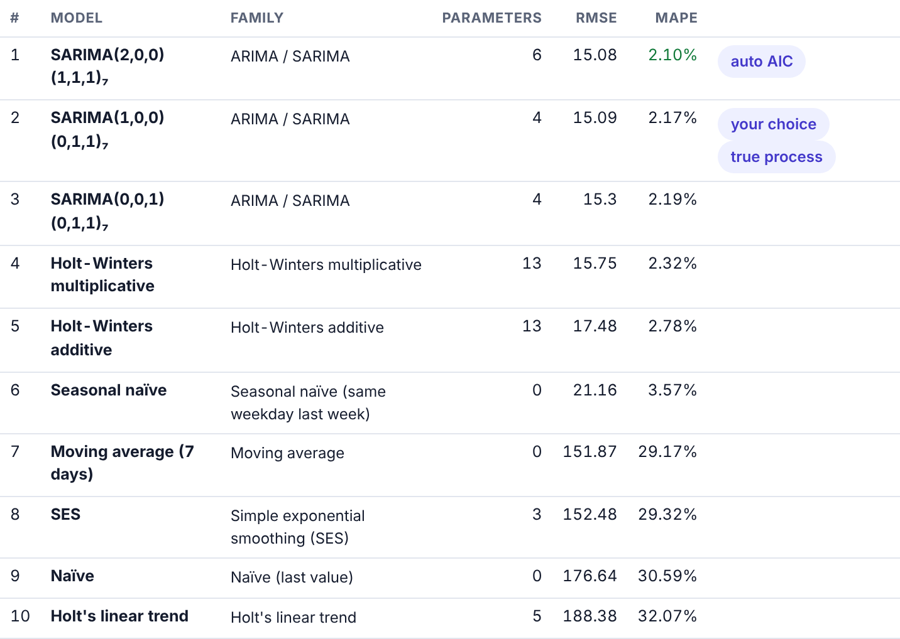
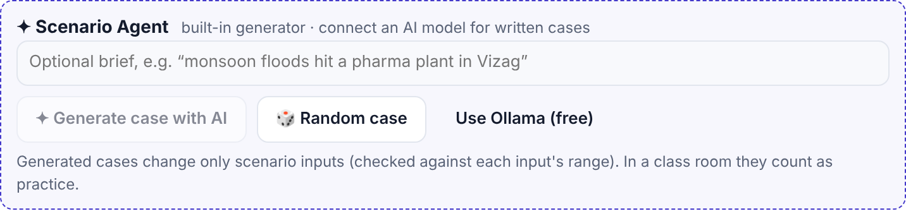
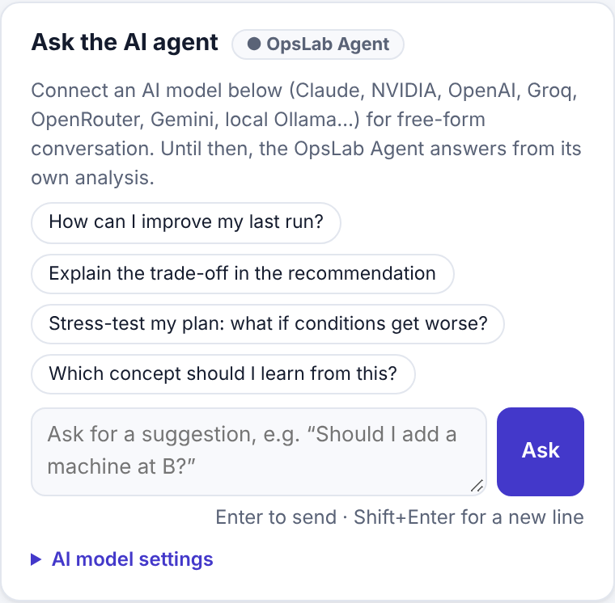
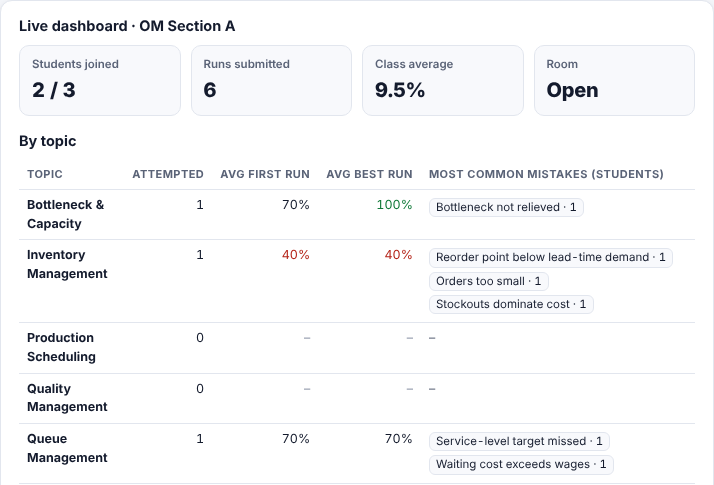

AI-agent product · Operations Management
Students make real operations decisions. A team of AI agents watches, tests better options, explains the trade-offs and coaches them, all inside one web page.
Inner ring: 7 AI agents around the OpsLab Agent hub · Outer ring: 12 simulation skills on one shared engine
Why it is useful
Most operations courses teach EOQ, queues or ARIMA as formulas on a slide. Students rarely get to make a decision, see what happens, and learn what would have been better. OpsLab gives every student that loop, with an AI agent team as their coach.
Meet the agent team
The OpsLab Agent sits at the centre and coordinates six specialists. They share one simulation engine, so they all work from the same computed facts.
How the agents work together
The agents never interrupt. They watch quietly and report after each run. Detailed advice opens only when you ask for it.
Set the decisions in blue, e.g. a reorder point and order size. The scenario (demand, costs, lead time) is the world you face.
The simulation engine plays out 90 days, 52 weeks or 1,000 seasons with fixed random streams, so results are repeatable.
The Operations Coach spots what went wrong (“reorder point below lead-time demand”) and logs your decision history.
The Optimizer tests hundreds of alternatives on the same scenario: 1,589 inventory policies in about 70 ms.
The best option, with gains and give-ups (“stockout cost −$2,760, holding +$865”) and a plain-language explanation.
Apply the recommendation or try your own idea, run again and watch your score climb toward 100% of the best option.

The Operations Coach after one inventory run: diagnosis, best option, gains and give-ups.
Agent skills
Each skill is a full case: a brief, data exhibits, your decisions, and an optimizer that knows the theory. Figures below are the default case vs the agent's recommendation.
Change in the topic's objective (cost, penalty or profit) from the default decision to the agent's recommendation, on the same scenario. Network design: the default also misses the service target; the agent's network meets it.
Specialist agents in action
Guides the time-series lab step by step: visualise, test, difference, read the ACF/PACF, fit and choose. It runs only the analysis you ask for, checks each decision, then waits for you.

Waiting at Step 5 after four correct decisions on a weekly-seasonal series.

The ACF the agent plotted on request: spikes at lag 1 and lag 7 point to SARIMA.

The debrief's model tournament: ARIMA, SARIMA, Holt-Winters, SES, naïve and more, ranked on the same test data.
Type a brief such as “monsoon floods hit a pharma plant in Vizag”. It writes a new case, or a whole campaign, and checks every value against the allowed limits. It never touches your decisions.

Upload your session slides or readings (PowerPoint, PDF, Word, Excel…). You get study notes, visual explanations, quizzes, slide-grounded help, and links to the matching simulation.
Ask the agent
Ask in plain words: “Should I add a machine at Assembly?” or “What if demand rises 30%?”. The Chat Agent runs the simulator as its toolbox and answers with computed numbers.
Models without tool calling still work: OpsLab hands them the pre-computed simulator data (grounded mode). With no model connected, the OpsLab Agent answers from its own analysis.

The chat box sits under the agent's report on every simulation.
Built-in trust · Class room
The professor runs one command on a laptop. Students join with a room code and their roll number. Every run is re-computed by the same engine, so forged scores are ignored. The professor gets a live dashboard: best % per topic, a leaderboard, first-run vs best-run averages, the class's most common mistakes and a CSV for grading.

Professor dashboard (test class).
Play any simulation as 4 or 8 quarters, or 3 or 5 years. Each round brings new conditions: growth, a festive peak, a supplier shutdown revealed only after you commit, a wage deal, a recall. The agents score each round against the best plan.
Get started
Open opslab.html in Chrome, Edge, Firefox or Safari. No install, no login, works offline.
Pick a simulation, read the case data, set your decisions and press Run. The agent reports after each run.
Optional: connect an AI model for chat and AI-written cases, upload slides in the Study Room, or start a class room.
| Minutes | What happens | Agents at work |
|---|---|---|
| 0–10 | Professor opens a class room; students join with roll numbers and read the case brief. | Class Monitor |
| 10–45 | Teams play 3–4 simulations: predict, run, read the diagnosis, improve, run again. | CoachOptimizer |
| 45–60 | Stress test: a new case or campaign round changes the world. Is the plan still best? | Scenario AgentChat Agent |
| 60–70 | Leaderboard and the class's common mistakes on screen; discuss the trade-offs. | Class Monitor |
| 70–75 | Print the session report. Homework: time-series lab and a Study Room quiz on today's slides. | Analytics AgentStudy Agent |
OpsLab: one page, seven agents, twelve ways to practise operations.
Files: opslab.html (the simulator) · README.md (quick start) · docs/OpsLab_Documentation.pdf (models, formulas and validation)